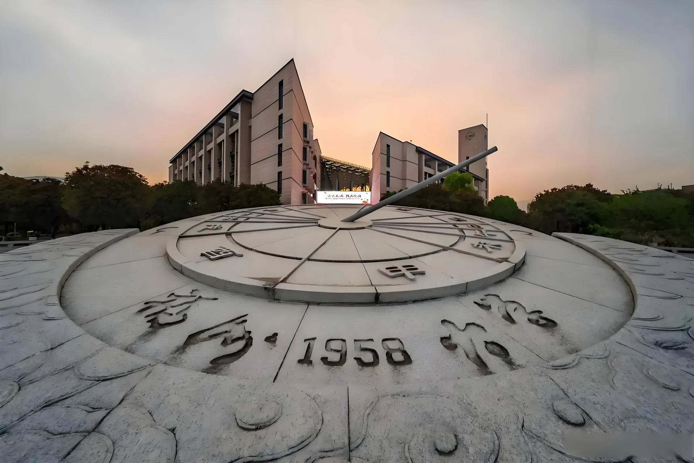

Contact
zhla ατ cs.aau.dk Preferred
lzc ατ fzu.edu.cn
Replace “ατ” with “@” in both addresses.
Office & Lab
Room 101, Building No. 3, College of Computer and Data Science, Fuzhou University, Minhou, Fuzhou, Fujian, China


Research in

Born in Fuzhou, China , I returned home at the end of 2025 after several years of study and research in Denmark . I’m now an Associate Research Professor at Fuzhou University’s College of Computer and Data Science , where I lead the Data Intelligence and Interdisciplinary Information Group. I’m also a member of the Fujian Key Laboratory of Network Computing and Intelligent Information Processing, with Professor Xing Chen as my mentor.
I work on time series and spatio-temporal data, developing efficient methods for learning from incomplete, interconnected, and evolving data. I’m also interested in GeoAI and AI for science and health.
I earned my B.S. from UESTC in 2018 and my M.S. from Sichuan University in 2021, advised by Professor Jiancheng Lv. I then moved to Denmark for my Ph.D. at Aalborg University , which I completed in early 2025 under the supervision of Professors Christian S. Jensen (Member of Academia Europaea; ACM/IEEE Fellow), Dalin Zhang, and Huan Li, while also working with Professor Hua Lu. During my Ph.D., I also spent time at NTNU with Professor Xu Cheng, and at UNSW Sydney with Professors Lina Yao and Dong Gong.
I welcome prospective master's students and first- or second-year undergraduates interested in research.
Curiosity, initiative, solid programming skills, and open communication. An interest in a Ph.D. is welcome; commitment and growth matter more than a polished CV.
Jointly developed projects, close guidance on experiments and writing, and a supportive environment to grow into an independent researcher.
zhla ατ cs.aau.dk Preferred
lzc ατ fzu.edu.cn
Replace “ατ” with “@” in both addresses.
Room 101, Building No. 3, College of Computer and Data Science, Fuzhou University, Minhou, Fuzhou, Fujian, China